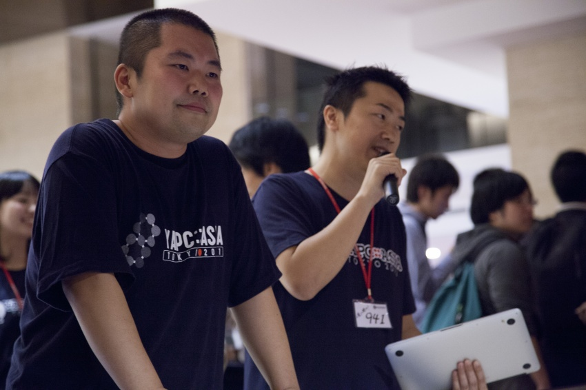

9/19-21開催のYAPC::Asia 2013 Tokyo での企画を紹介します
こんにちは、櫛井です。
いよいよ明日から開催ですね！
さてさて、今年も色々と盛り沢山で準備させていただいておりまして
自分でも何をするんだったか忘れそうなので実施する企画のまとめです。
まず、今年のテーマは「エンジニアのエンジニアによるエンジニアのためのお祭り」
というわけで、会場をお祭りっぽい雰囲気とする予定です。詳細は会場に着いてからのお楽しみ。
前夜祭
毎年恒例、本編の前日に開催されるトークを聞きながら軽く飲もうぜというやつです。
例年ですと本編で採択されなかったトークをするReject-conをしていましたが今年は
昨年のYAPCで好評だったLTソン（延々とLTをするLTマラソン）です。
まだLTスピーカーの募集をしているようですので是非どうぞ。
当日飛び入りもOKという噂も聞きましたのでコッソリ資料を作っておくとよいかもですね。
関連
▼YAPC::Asia Tokyo 前夜祭はLTソン！
公式サイト
▼YAPC::ASIA 2013 LT-THON
トーク
例年は３つだった会場が今年は４つに増えたことにより、多くのトークを聞けるチャンスがあります。
Perlに限らない多様なトークが登録されていますのでどのトークを聞くかある程度決めておくと
よいのではないかと思います。トークスケジュールにはトーク内容のジャンル、対象、発表言語など
が記載されています。
１日目 9/20(Fri) のトークスケジュール
▼Talk Schedule 2013-09-20 - YAPC::Asia Tokyo 2013
２日目 9/21(Sat) のトークスケジュール
▼Talk Schedule 2013-09-21 - YAPC::Asia Tokyo 2013
iOS向けのスケジュールビューアもありますので是非ご利用ください。
▼iOS版YAPC::Asia Tokyo 2013 スケジュールビューアがリリースされました！ | YAPC::Asia Tokyo 2013
トークへの投票
学生チケット、通常チケット、個人スポンサーの皆さんは投票権が発行されます。
面白かった・参考になった・刺激を受けたトークがありましたら是非投票をしてください。
今年のベストトーク賞は
・１位 YAPCに限らない国外技術カンファレンスへ派遣
・２位 国内の技術カンファレンスに派遣
・３位 旅費は出ませんが技術カンファレンスの参加チケット費用を負担
を予定しています。
詳細はこちら
▼YAPC::Asia 2013 ベストトーク賞の賞品決定！＆トーク申し込みは本日締切！
特別座談会
「Rubyの良いところ語ってください 〜そんなPerlで大丈夫か？〜」という副題で、そうそうたる
Ruby界の重鎮の方々（舘野氏、卜部氏、増井氏）にお集まりいただいて、Rubyの良いところ
（＝Perlに足りないところ）、Rubyがいけてる理由を熱く語ってもらう特別座談会を行います。
トークは9/21(Sat) 13:00から 藤原洋記念ホールで開催です。
詳細はこちら
▼YAPC::Asia Tokyo 2013 特別座談会 「Rubyの良いところ語ってください 〜そんなPerlで大丈夫か？〜」 - YAPC::Asia Tokyo 2013
Lightning Talks (LT)
YAPCの花形、Lightning Talksは泣いても笑っても５分で終了する電光石火のトークです。
9/20(Fri)は17:00から、9/21(Sat)は16:30から、いずれも藤原洋記念ホールで開催です。
また、現在トークの募集中ですので登壇したいという方は
こちらからご応募ください
LTが採用されますと、Lightning Talks Day 1とLightning Talks Day 2に掲載されます
詳細はこちら
▼Now Accepting Lightning Talk Proposals | Lightning Talks (LT) の募集を開始！
Perl入学式 in YAPC::Asia
Perl初学者向けのワークショップである「Perl入学式」が YAPC::Asia に出張してきてくださいます。
カリキュラムは事前投票の結果、コマンドラインからウェブサービスのAPIを叩いて操作する
「コマンドラインアプリケーション」の開発をテーマとする予定とのことです。
Perl入学式の公式のYAPC特設ページはこちら
▼Perl Entrance
関連エントリー
▼YAPC::Asiaで行われるPerl入学式のワークショップについて色々インタビューしてみました！
▼ YAPC::Asia Tokyo 2013 通常チケット発売とPerl入学式開催のお知らせ | Regular Tickets On Sale !
ランチセッション
9/20(Fri), 21(Sat)の両日、12時10分よりスポンサー企業のお話を聞きながら
豪華なお弁当を食べましょう、というものです。
9/20,21の両日にご登壇いただくシックス・アパート様からは Movable Type 6の新機能や見所、求人情報について
9/20のマイクロソフト様からはWindows Azureについて、9/21のLINE様からは会社紹介と求人情報などについて
お話いただく予定となっております。
※事前に参加登録が必要で、すでに締め切っております
関連エントリー
▼YAPC::Asia 2013 ランチセッション開催のお知らせ
ランチ交流企画
「誰かYAPC行かないの？」「ぼっちでも大丈夫なのかな...」
今年もそんな声をよく見かけますので、去年やってみたところ好評だったランチ交流企画を実施いたします！
今年は参加者全員がマッチングされる安心の仕組みで、さらに抽選でお弁当も当たります。
クジ引きは9/20,21の両日、朝から先着順となります。
※ランチセッションに参加予定の方はクジは引けませんのでご注意ください
関連エントリー
▼YAPC::Asia 2013 今年もお一人様大歓迎！ランチ交流企画やります
BOF・交流スペース
最大収容人数150名ほどの大きな会場「イベントホール」を交流スペースとして開放します。
ざっくばらんな発表やアンカンファレンス形式でのプレゼン、参加者同士の交流などに利用できます。
当日、有志によって突発的に面白い企画が始まったりするかもしれませんので要チェックです！
開催は 9/20(Fri) 14:30~, 9/21(Sat) 14:00~ となっております
関連エントリー
▼トーク採択結果発表 ＋ BOF/交流スペースのお知らせ / Talk schdule up, BOF/Socialize
懇親会
今年も、株式会社ディー・エヌ・エー様のご厚意で参加費無料となりました。ありがとうございます。
憧れのハッカーに直接質問したり、エンジニア同士で交流する絶好の機会となっている懇親会ですが
今年はイベントホールと、隣接するレストランを貸しきっての開催となります。
9/20(Fri) 19:00からスタートです。
※参加するには事前に参加登録が必要で、すでに締め切っております
※スピーカーの方は事前参加登録は不要です
関連エントリー
▼YAPC::Asia 2013 9/20(金)懇親会 予約受付開始!
今年のYAPCでは他にも屋台が出たり、中秋の名月にちなんだ掲示物があったりとお祭り感を
さらに増して準備する予定でおります。年に一度のエンジニアのためのお祭、楽しんでいってくださいね！

Twitterでの質問は公式ハッシュタグ #yapcasia を付けて発言していただくか運営担当である櫛井 (@941) か牧 (@lestrrat) までご連絡ください。